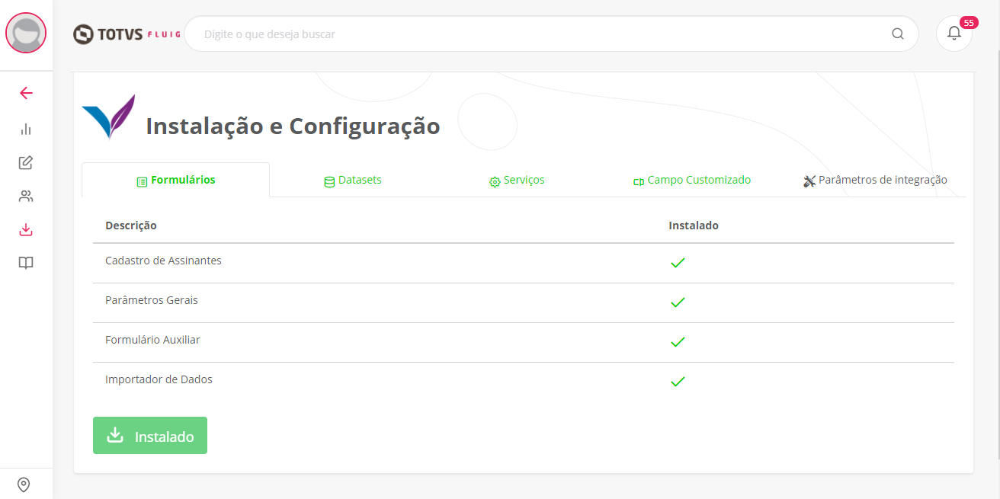
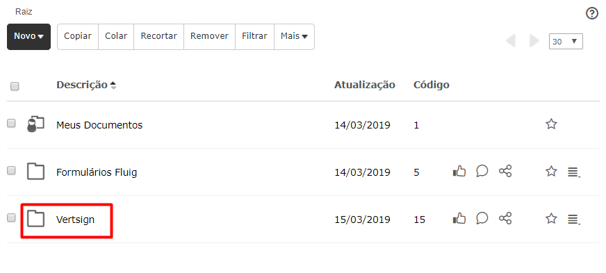
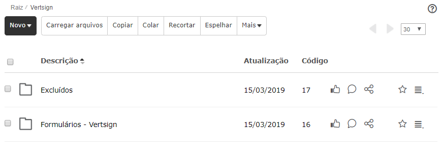

Formulários
Durante a instalação, será criada uma pasta chamada Vertsign dentro da pasta raiz do fluig. Essa pasta servirá para armazenar os formulários e todas as informações do Vertsign.
Os formulários serão instalados para realizar o Cadastro de Assinantes, Cadastro de Parâmetros Gerais do App e Formulário para Auxiliar no envio e retorno de documentos enviados para assinatura.
- Cadastro de assinantes: Formulário responsável por armazenar os dados dos assinantes inseridos através da widget. O fluig irá armazenar o nome, e-mail e CPF.
- Parâmetro gerais: Formulário responsável por armazenar os parâmetros do app. Ele será atualizado conforme a instalação é realizada.
- Formulário Auxiliar: Formulário responsável por registrar cada documento enviado para assinatura, trazendo em cada registro informações relevantes sobre o documento enviado. Este formulário não será acessado de forma direta pelo usuário.
- Importador de dados: Formulário utilizado para importar os dados para a base fluig.
Página "Instalação e Configuração" demonstrando formulários instalados

Pasta "Vertsign" criada na raíz do ECM-GED

Pastas criadas para armazenar os formulários instalados

Datasets
Esta etapa é responsável por realizar a instalação dos datasets que farão a integração entre o fluig e a Certisign.
Abaixo estão os datasets que serão instalados:
- ds_upload_vertsign: lista todos os documentos do formulário auxiliar que estão pendentes de envio e envia para a Certisign.
- ds_callback_vertsign: faz o download do manifesto e anexa no arquivo automaticamente quando o cliente possui "Callback"
- ds_upload_vertsign_manual: envia os documentos para assinatura. É executado após cada envio de documento.
- ds_auxiliar_vertsign: auxilia a widget executando os webservices do fluig.
- ds_delete_vertsign: deleta um arquivo do Portal de Assinaturas da Certisign.
- ds_documents_autocomplete_vertsign: lista todos os arquivos disponíveis do ECM-GED para envio.
- ds_admin_vertsign: lista todos os usuários administradores da plataforma.
- ds_signers_vertsign: lista todos os assinantes cadastrados.
- ds_update_status_vertsign: atualiza os status de assinatura do assinante no Quadro de Status (quando "Callback" disponível).
- ds_reject_document_vertsign: atualizar o status do documento para "Rejeitado".
- ds_package_vertsign: verifica se os documentos foram assinados no Portal de Assinaturas da Certisign e retorna o manifesto para o ECM-GED do fluig. É executado periodicamente no "Agendador de Tarefas".
- ds_delete_manifesto_vertsign: responsável por remover os manifesto após anexar ao documento original.
Após a instalação, os datasets marcados como "Sincronizado" serão criados no "Agendador de tarefas" do fluig. Por padrão serão executados uma ver por dia, podendo ser alterado. Para visualizar os datasets no "Agendador de tarefas", basta acessar: Painel de Controle > Parâmetros Técnicos > Agendador de tarefas
Página "Instalação e Configuração" demonstrando datasets instalados
Datasets sincronizados no "Painel de Controle" do fluig

Serviços
Nesta etapa será realizada a instalação dos serviços utilizados pelo App:
- ECMCardService_Vertsign: Webservice responsável por realizar operações referentes a formulários no fluig.
- ECMCustomFieldsService_Vertsign: Webservice responsável por interagir com os campos customizados do fluig.
- ECMDocumentService_Vertsign: Webservice responsável por realizar operações referentes a documentos do fluig.
- ECMFolderService_Vertsign: Webservice responsável por realizar operações referentes a pastas no fluig.
- ECMTokenService_Vertsign: Webservice responsável por interagir com os token's do fluig. Pode ser utilizado para pesquisar e validar os token's existentes.
- ECMWorkflowEngineService_Vertsign: Webservice responsável por realizar operações referentes a workflow no fluig. Pode ser utilizado para movimentar solicitações, entre outros recursos.
Feita a instalação dos serviços, eles poderão ser encontrados em: Painel de Controle > Desenvolvimento > Serviços


Campo customizado
Nesta etapa da instalação será instalado o campo customizado que é atualizado a cada alteração de status do documento enviado para assinatura.

Após a instalação, para visualizar o campo customizado basta acessar:
Painel de Controle > Personalização > Campos customizados

Observação
Para fins de testes e desenvolvimentos de BPM (vide tópico Integração com BPM), o app Vertsign poderá ser instalado no ambiente de homologação/testes do fluig desde que este esteja direcionado para o mesmo License Server do ambiente de produção fluig.Vale ressaltar que é necessário um Token de homologação para o Portal de Assinaturas (vide tópico Campos em Configuração).
Atenção!
Caso algum erro tenha ocorrido na instalação, consulte o FAQ.Atualização
A atualização dos formulários e dos datasets é feita pela widget Instalação e Configuração.
Para clientes que adquiriram a versão 1.0.0 da Vertsign a atualização dos formulários e datasets estará disponível. Para utilizar a versão 1.1.0, é necessário realizar as atualizações. Feita a atualização, as widgets serão liberadas para serem utilizadas e os registros da versão anterior serão mantidos.